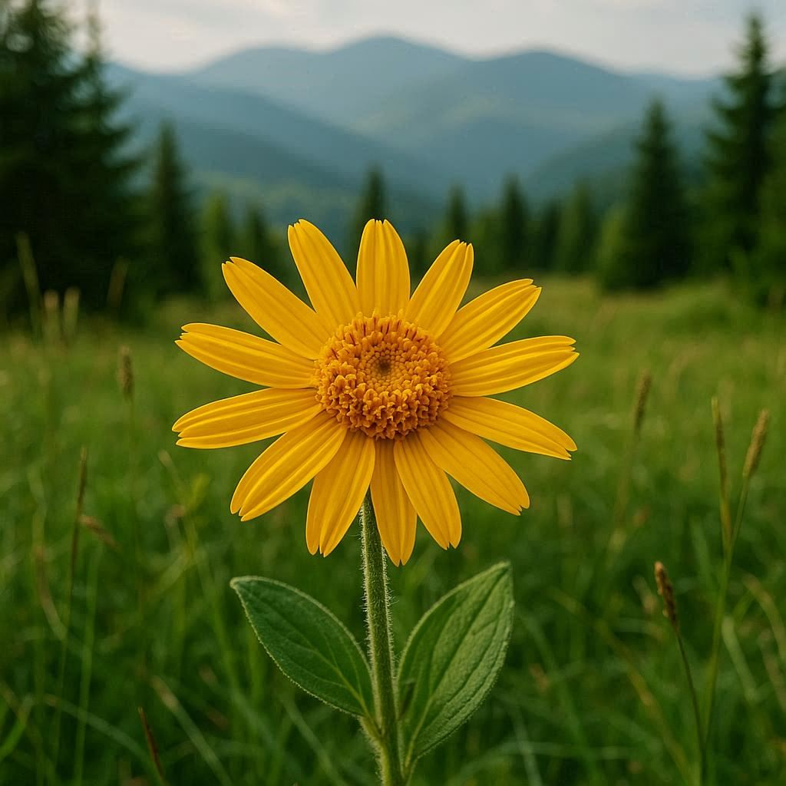
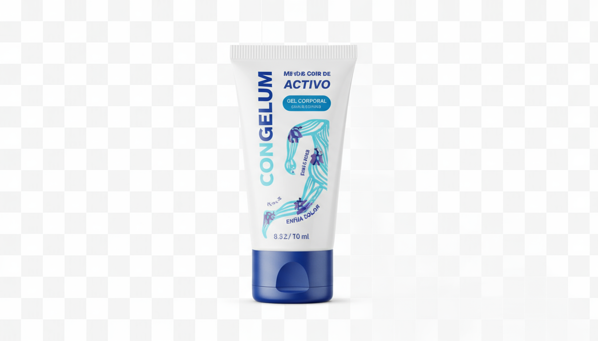
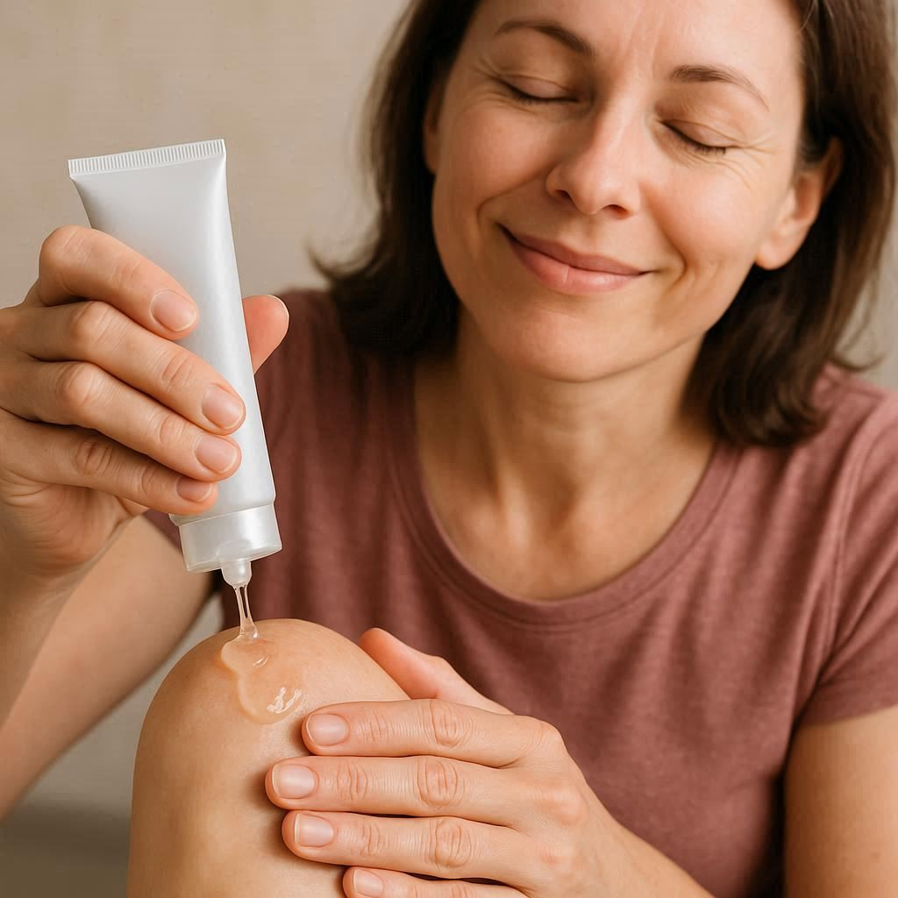

Numele meu este Vasile Popescu, am 67 de ani și sunt un inginer pensionar din cartierul Mănăștur din Cluj-Napoca. Până acum câteva luni, viața mea era un chin silențios. Fiecare pas, fiecare treaptă urcată spre apartamentul meu era un memento dureros că tinerețea a trecut. Durerea ascuțită din genunchi și șolduri mă transformase într-un bătrân morocănos.
Nu mai puteam să merg pe jos până în Piața Unirii fără să mă opresc de trei ori pe bancă, gâfâind. Grădina mea mică, singura mea bucurie, ajunsese să fie o corvoadă. Soția mea trebuia să mă ajute să mă încalț. Mă simțeam inutil, o povară. Am cheltuit o avere pe toate unguentele din farmacii. Unele ofereau o alinare de moment, dar durerea revenea mereu, mai puternică. Eram disperat.
Într-o zi, făcând ordine în podul casei părintești de lângă Munții Apuseni, am găsit un jurnal vechi al bunicului meu. Între paginile îngălbenite, am descoperit o notiță despre o plantă locală pe care ciobanii o foloseau pentru "a răcori și a calma încheieturile obosite după o zi de urcuș pe munte". Era descrisă ca o "gheață a naturii".
Evident, nu puteam să merg să culeg planta. Dar ideea nu mi-a dat pace. Am început să caut online soluții moderne bazate pe un principiu similar: un efect de răcire intensă și profundă. Așa am descoperit Congelum. Formula sa părea să fie exact versiunea modernă a secretului bunicului meu. Am comandat fără să mai stau pe gânduri.
Prima aplicare a fost uimitoare. O senzație de răcoare intensă mi-a cuprins genunchiul, iar în câteva minute, tensiunea și focul din interior au început să se stingă. Nu era un miracol, ci o ușurare reală. După o săptămână, am putut să lucrez în grădină o oră întreagă. Acum, merg zilnic la plimbare și chiar urc scările două câte două, în glumă. Mi-am recăpătat nu doar mobilitatea, ci și bucuria de a trăi.
Nu sunt medic și nu promit minuni. Împărtășesc doar povestea care mi-a schimbat viața, pentru că știu prin ce trec mulți români. Datorită interesului mare, producătorul a lansat un program special pentru cititorii acestei pagini, oferind Congelum la un preț promoțional.
Atenție! Stocul este limitat și se epuizează extrem de repede. Nu mai lăsa durerea să-ți dicteze viața. Acționează acum!